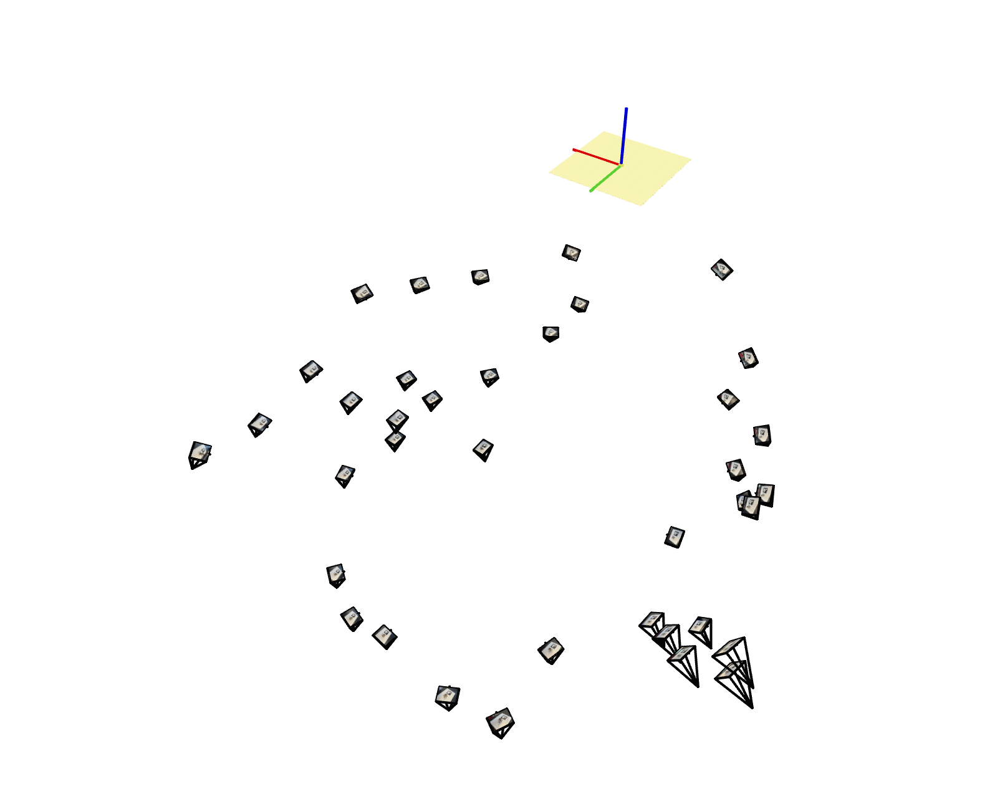
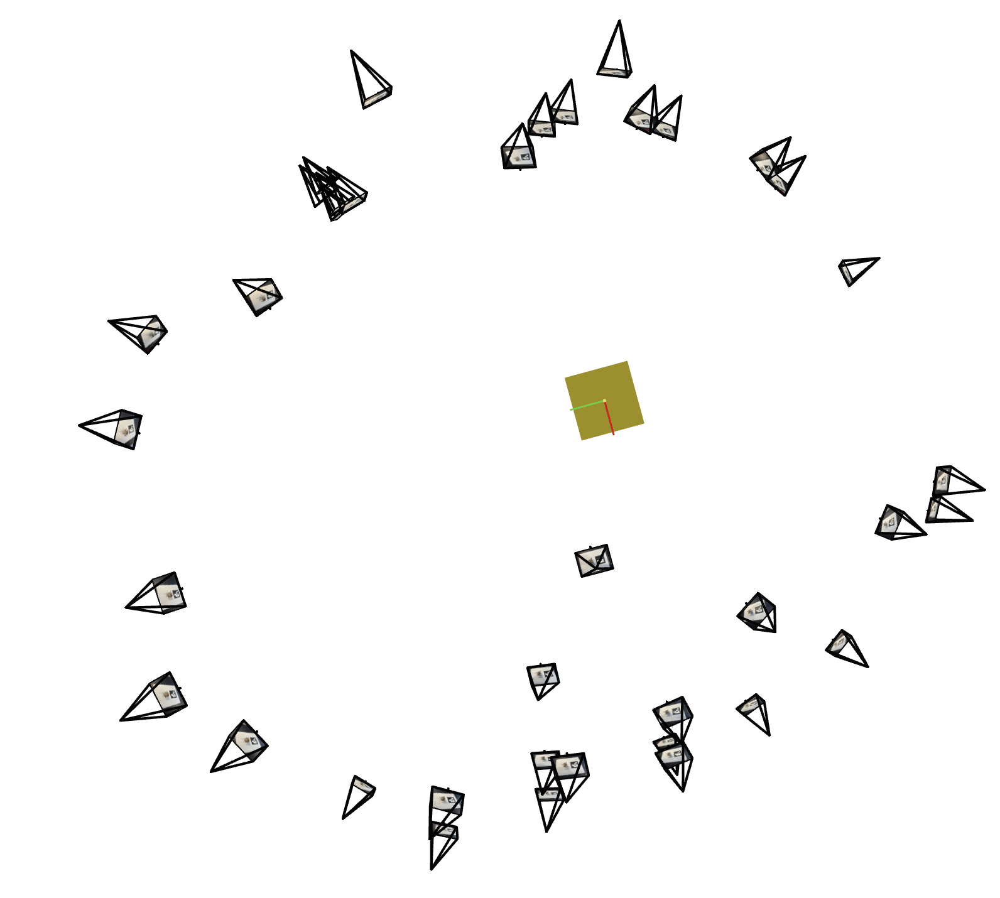
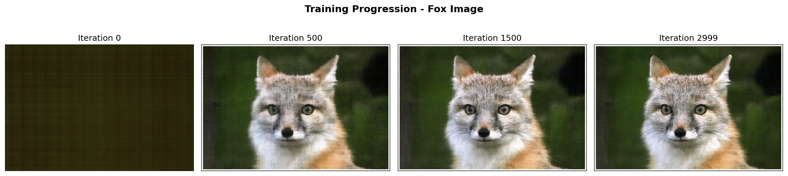
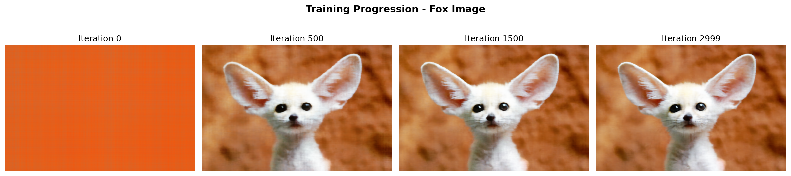
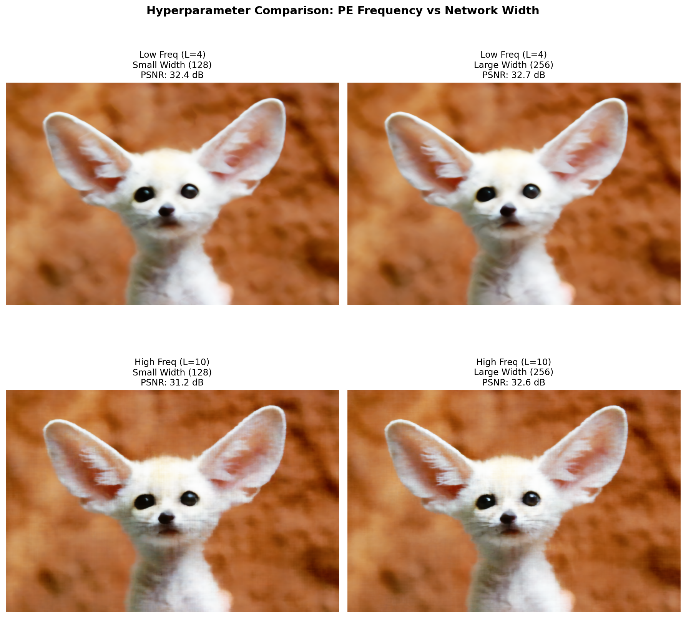
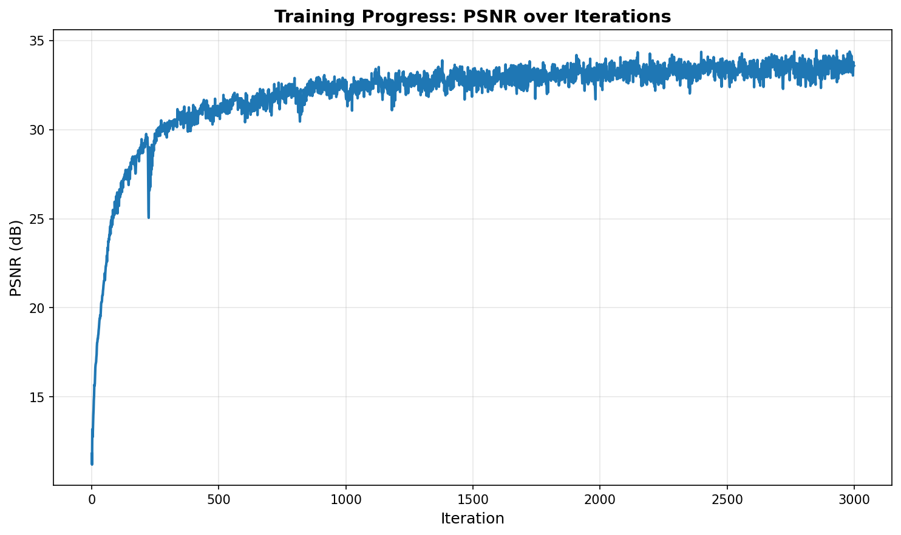

Project Overview
Goal
This project explores Neural Radiance Fields (NeRF), a powerful technique for 3D scene reconstruction and novel view synthesis. I implement neural networks that can learn to represent scenes as continuous functions, enabling the generation of photorealistic images from previously unseen viewpoints.
The project consists of three main parts: camera calibration and 3D scanning, fitting a neural field to 2D images, and implementing a full Neural Radiance Field for multi-view 3D reconstruction.
Part 0: Camera Calibration and 3D Scanning
In this section, we calibrate our camera parameters using ArUco tags and estimate camera poses for creating our own 3D dataset. This provides the foundation for training NeRF on custom captured scenes.
Implementation Steps
- Capture 30-50 calibration images of ArUco tags from varying angles and distances
- Detect ArUco tags using OpenCV's detector and extract corner coordinates
- Use cv2.calibrateCamera() to compute camera intrinsics and distortion coefficients
- Estimate camera poses using cv2.solvePnP() for each image
- Visualize camera frustums in 3D using Viser
- Undistort images and package dataset in .npz format
Camera Frustum Visualization
The following screenshots show the camera frustums visualization in Viser, displaying the estimated camera poses and captured images:

Camera Frustums - View 1

Camera Frustums - View 2
Part 1: Fit a Neural Field to a 2D Image
This section introduces the core concept of neural fields by fitting a simple MLP to represent a 2D image as a continuous function mapping pixel coordinates to RGB values.
Model Architecture
- Number of Layers: 3 hidden layers + 1 output layer
- Hidden Layer Width: 256 neurons per layer
- Learning Rate: 1e-2 (0.01)
- Optimizer: Adam
- Loss Function: Mean Squared Error (MSE)
- Positional Encoding: Sinusoidal, max frequency L=10 (default)
- Training Iterations: 3000 iterations
- Batch Size: 10,000 pixels per batch
- Activation Function: ReLU (hidden layers), Sigmoid (output)
- PE Output Dimension: 42D (2D input → 2 + 2×11×2 = 42)
Training Progression
The following visualizations show the training progression on both the provided test image and a custom image:

Training Progression - Test Image (Fox)

Training Progression - Custom Image
Hyperparameter Comparison
Results showing the effect of different max positional encoding frequencies and network widths:

Hyperparameters Comparison
Training Metrics

PSNR vs Training Iterations
Part 2: Fit a Neural Radiance Field from Multi-view Images
In this section, we implement a full Neural Radiance Field that learns to represent 3D scenes from multiple 2D views, enabling novel view synthesis.
Implementation Description
Ray Generation: Converts pixel coordinates to 3D rays using camera intrinsics and extrinsics. The pixel_to_ray function transforms 2D pixel coordinates to camera coordinates using the inverse intrinsic matrix K⁻¹, then applies the camera-to-world transformation to get ray origins and directions in world space.
Point Sampling: Samples points along rays using stratified sampling between near (2.0) and far (6.0) bounds. The sample_points_from_rays method divides each ray into 64 equally-spaced intervals and optionally adds random perturbations within each interval to reduce aliasing artifacts.
Volume Rendering: Implements the discrete volume rendering equation using the volrend function. Computes alpha values α_i = 1 - exp(-σ_i * δ_i) and transmittance T_i = exp(-Σ_{j=1}^{i-1} σ_j * δ_j), then integrates colors as Σ T_i * α_i * c_i along each ray to produce the final pixel color.
Loss Function: Uses Mean Squared Error (MSE) loss between predicted RGB values and ground truth pixel colors. The training loop samples random rays, predicts colors through the NeRF network and volume rendering, then backpropagates the photometric reconstruction error to optimize the neural network parameters.
Ray and Sample Visualization

Visualization of Rays and Samples with Cameras
Training Progression
The following shows how the NeRF learns to reconstruct the scene over only 601 training iterations:

NeRF Training Progression
Validation Metrics

PSNR on Validation Set
Novel View Synthesis

Spherical Rendering of Lego Scene
Rendering Process

Intermediate Renders During Training
Part 2.6: Training with Your Own Data
Here I apply NeRF to our own captured dataset, demonstrating the pipeline from camera calibration to novel view synthesis.
Code and Hyperparameter Changes
To account for the less descriptive and complicate dataset, I make the following adjustments to the hyperparameters:
- PE_pos: 6
- PE_dir: 3
- batch: 4096
- lr: 5e-4
- num_iterations: 6200
- sample size: 128
- hidden dimension: 512
Novel View Results

Camera Circling Custom Object
Training Analysis

Training Loss Over Iterations

PSNR Over Iterations
Rendering Process